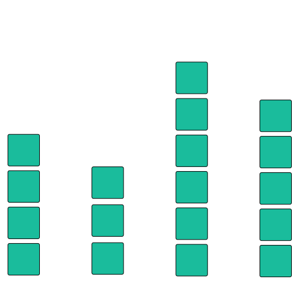

Data-Driven Guides
Supporting Expressive Design for Information Graphics
Introduction
In recent years, there is a growing need for communicating complex data in an accessible graphical form. Existing visualization creation tools support automatic visual encoding, but lack flexibility for creating custom design; on the other hand, freeform illustration tools require manual visual encoding, making the design process time-consuming and error-prone. In this paper, we present Data-Driven Guides (DDG), a technique for designing expressive information graphics in a graphic design environment. Instead of being confined by predefined templates or marks, designers can generate guides from data and use the guides to draw, place and measure custom shapes. We provide guides to encode data using three fundamental visual encoding channels: length, area, and position. Users can combine more than one guide to construct complex visual structures and map these structures to data. When underlying data is changed, we use a deformation technique to transform custom shapes using the guides as the backbone of the shapes. Our evaluation shows that data-driven guides allow users to create expressive and more accurate custom data-driven graphics.
Authors

Nam Wook Kim
Ph.D. student
Harvard

Eston Schweickart
Ph.D. student
Cornell

Zhicheng Liu
Research Scientist
Adobe
Mira Dontcheva
Senior Research Scientist
Adobe
Wilmot Li
Principal Scientist
Adobe
Jovan Popovic
Senior Principal Scientist
Adobe
Hanspeter Pfister
Professor
Harvard
Citation
Data-Driven Guides: Supporting Expressive Design for Information Graphics
Nam Wook Kim, Eston Schweickart, Zhicheng Liu, Mira Dontcheva, Wilmot Li, Jovan Popovic, Hanspeter Pfister.
IEEE Transactions on Visualization and Computer Graphics (InfoVis’16), 2017
Drawing with Data-Driven Guides
We draw inspiration from existing design practices in areas such as architectural or user interface design, where a guide is used as a reference (e.g., a ruler and grid) for precise drawing or alignment.We follow the theoretical frameworks of visual encodings that describe the most effective channels to encode information. We use data guides to size the primary visual variables of length and area, which in turn are represented as line- and circle-shaped guides, respectively
Interacting with Guides
DDG is designed to be fluidly integrated in a flexible graphic design environment, favored by infographic designers. To this end, the visual appearance and interaction model of DDG follow those of regular guides available in existing graphic design tools. A main difference from regular guides is that data guides are driven by data. A group of data guides can be created from a tabular dataset consisting of a series of numerical values and their category names; depending on the encoding type, the length (line) or area (circle) of a data guide represents a data value in the dataset. The relative sizes of data guides within the parent group are preserved in order to be in sync with the underlying dataset.
Drawing with Guides - Part 1
A data guide serves as a ruler backed up by data to minimize designer’s effort to manually place and measure graphics; its size and shape indicate where a data value lies on the canvas. Users can draw custom shapes from scratch directly on top of data guides. The overall drawing experience is closer to drawing with a pen and ruler (i.e., bottom-up design process). Alternatively users can use data guides to repurpose existing artworks by matching the artworks to the size of the guides (See retargetting example).
Drawing with Guides - Part 2
Users can combine multiple data guides in order to construct more expressive structures. This has the same effect as combining different visual variables, in our case length, area and position. See also examples and the teaser video at the top. The repeat feature in DDG allows an associated shape to be repeated over its sibling guides in the same group. If a pair of guides from two groups is supposed to encode a single shape, we only repeat the shape once as shown in the video below.
Other Examples
A sankey-style diagram where two DDG are juxtaposed to compare the rankings of two different metrics.
An area chart using a single stroke to draw the area and to encode slopes in the declining trend.
A balloon chart using area DDG for the size of balloons and position DDG for the location of the balloons.
A cloud and chimney chart where four DDG created from the same dataset are used to encode each cloud.
Repurposing Existing Artworks
DDG maintain a flexible design process by allowing users to not only draw custom shapes on top of guides or but also to use the guides to repurpose existing artworks. In this example, instead of drawing it from scratch, we imported a monster graphic (inspired by Nigel Holmes’ Monstrous Costs chart) into the tool and repurposed it with data guides by adjusting the teeth to match the size of the guides. This workflow is the top-down, graphical process of placing data on existing graphics.
Nigel Holmes’ Monstrous Costs chart drawn by hand in 1982
Taking advantage of the data-binding capability of DDG, small multiples are easily created by copying the chart, pasting it, and changing the data for each cloned chart. DDG’s data binding support for freeform shapes further improves the design process by alleviating manual encoding when data is changed as well as increasing the reusability of custom charts. DDG is basically an intermediate layer for associating data with any objects including shapes, texts, or guides. When data is changed, related guides will consequently change their forms, which in turn transforms the objects that are linked to the guides.
Proofreading Existing Infographics
DDG can also be used to proofread exsiting infographics. For example, when we juxtaposed data guides on top of the original image we found that the factory worker chart by Nigel Holmes may have an incorrect representation of the data. The lengths of three lava marks representing France, Japan, and Britain do not match the size of data guides; the baseline is not clear however.
We also found a similar case in the balloon chart designed by Tiffany Farrant-Gonzalez; that is, the radius of the balloon instead of the area was used to represent the data value. This case is actually a commonly found mistake in existing infographic design practice.
Acknowledgement
Nigel Holmes' infographics
In our paper, we used two infographics created by Nigel Holmes, including the monster and factory worker charts (see above). Both infographics were drawn by hand in 1982 which may inevitably contain some errors. We would like to thank Nigel Holmes for allowing us to use his infographics.